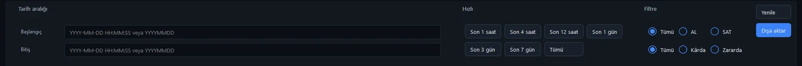

Raporlar
Performans Analitiği ve Strateji Raporları
Seçtiğin tarih aralığı için günlük özet, başarı oranı, toplam ve ortalama PnL ile en iyi ve en kötü işlemi gör. Sonuçları CSV, PDF ya da Excel olarak dışa aktar.

Uygulamanın gerçek ekranı, sanal modda çekilmiştir.
Sonuçları günlere böl, eğilimi gör
Raporlar, işlem geçmişini gün gün özetler; böylece stratejinin hangi günlerde nasıl çalıştığını görürsün.
Tarih aralığı ve hızlı seçimler
Başlangıç ve bitiş tarihi girebilir ya da hızlı seçimleri kullanabilirsin: son 1, 4 ve 12 saat; son 1, 3 ve 7 gün; tümü.
- AL, SAT ya da tümü
- Kârda, zararda ya da tümü
- Tek tıkla yenile

Günlük özet tablosu
Her gün için işlem sayısı, başarı oranı, toplam PnL, ortalama PnL, en iyi ve en kötü işlem tek satırda görünür.
- Başarı oranı yüzde olarak
- Toplam ve ortalama PnL
- En iyi ve en kötü işlem

Raporu paylaş ya da sakla
Raporları CSV, PDF ya da Excel olarak dışa aktarabilir, işlem ayrıntılarını işlem geçmişinden inceleyebilirsin.
- CSV, PDF ve Excel
- İşlem ayrıntıları için kapalı pozisyonlar
- Sanal ve gerçek mod sonuçları

Raporlarda neler var?
Özet, filtre ve dışa aktarma tek ekranda.
Tarih aralığı
Elle tarih girme ya da hızlı seçimler.
Başarı oranı
Günlük ve toplam başarı oranı.
PnL özeti
Toplam PnL, ortalama PnL, en iyi ve en kötü işlem.
Filtreler
AL/SAT ve kârda/zararda filtreleri.
Dışa aktarma
CSV, PDF ve Excel.
Özet kartlar
Toplam işlem, kazanan, kaybeden ve toplam PnL.
Sık sorulan sorular
Raporları hangi formatlarda dışa aktarabilirim?
CSV, PDF ve Excel olarak dışa aktarabilirsin.
Raporlar gerçek ve sanal işlemleri ayırır mı?
Raporlar, kullandığın moddaki işlem geçmişini özetler. Sanal mod sonuçları gerçek işlem sonucu değildir.
Raporlar gelecekteki performansı gösterir mi?
Hayır. Raporlar geçmiş işlemleri özetler; gelecekteki sonuçları garanti etmez.
İlgili sayfalar
Stratejini bugün sanal modda dene
Uygulamayı indir, stratejini kur ve gerçek para kullanmadan nasıl çalıştığını gör.